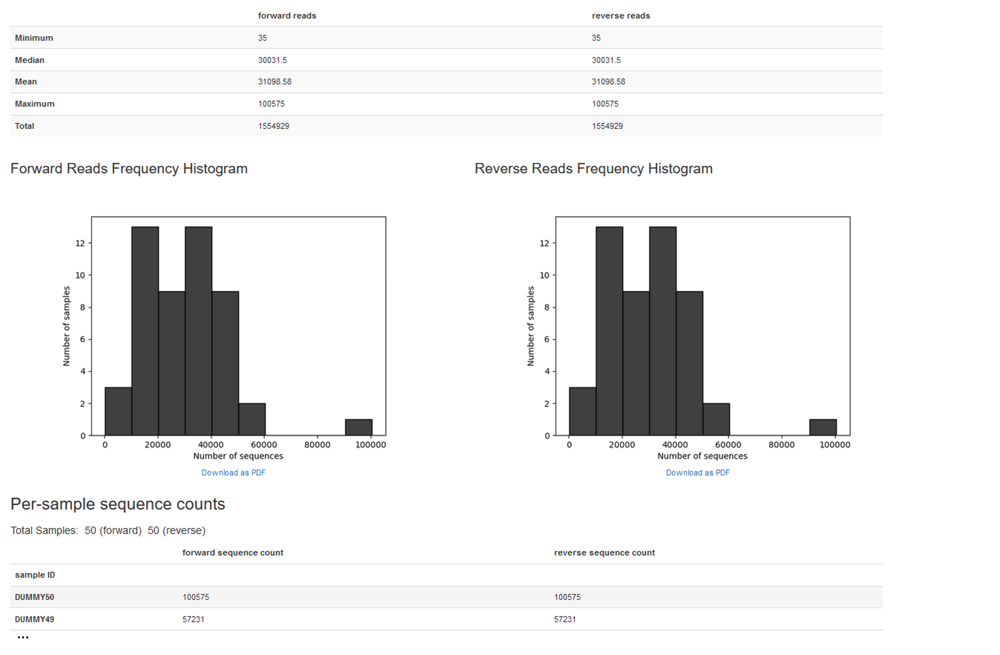
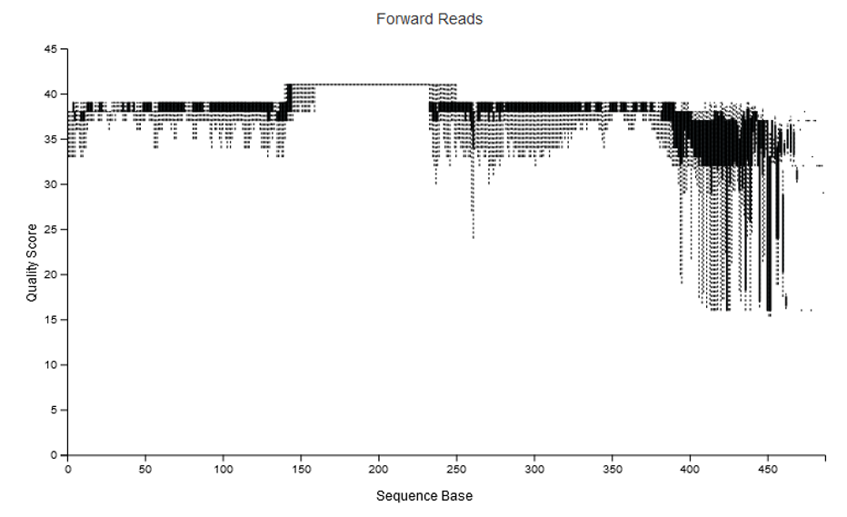
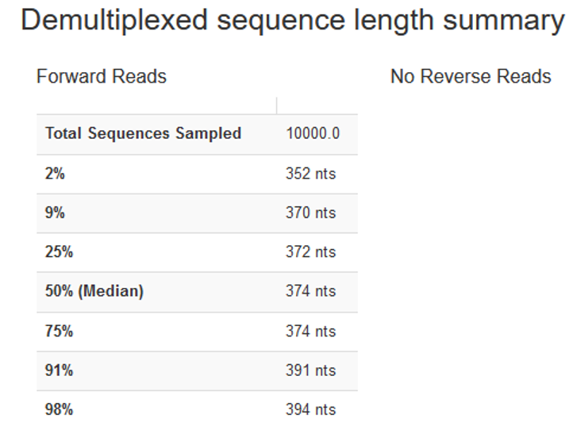

wget https://data.qiime2.org/distro/core/qiime2-2023.7-py38-linux-conda.yml
mamba env create -n qiime2-2023.7 --file qiime2-2023.7-py38-linux-conda.ymlA short QIIME tutorial
These tutorial closely follows the tutorial from IBEDs former bioinformatician, Evelyn Jongepier. A large part of the text found here was taken directly from this tutorial but extended as was seen fit and updated to work with a newer QIIME version.
A test data set is provided with this tutorial and consists of already demultiplexed sequencing data. The files we are working with are:
- The forward, R1, reads
- The reverse, R2, reads
- The metadata file describing what kind of data we work with (in our case that is simply a sample ID)
Other comments on the files:
- The barcodes used are ~20 bp long
- Each read is 250 bp long
- The primers used are called 515F and 926R and target the V4 region of the 16S SSU rRNA resulting in a fragment length or amplicon size of 411 bp
- When removing the primer, we have a target region of around 371 bp
- How to calculating whether or not there is an overlap between our forward and reverse read: (length of forward read) + (length of reverse read) − (length of amplicon) = length of overlap
- 250 + 250 - 411 = ~90 bp overlap
QIIME2 terminology
Data produced by QIIME 2 exist as QIIME 2 artifacts. A QIIME 2 artifact contains data and metadata. The metadata describes things about the data, such as its type, format, and how it was generated (i.e. provenance). A QIIME 2 artifact typically has the .qza file extension when stored in a file. Since QIIME 2 works with artifacts instead of data files (e.g. FASTA files), you must create a QIIME 2 artifact by importing data.
Visualizations are another type of data generated by QIIME 2. When written to disk, visualization files typically have the .qzv file extension. Visualizations contain similar types of metadata as QIIME 2 artifacts, including provenance information. Similar to QIIME 2 artifacts, visualizations are standalone information that can be archived or shared with collaborators. Use https://view.qiime2.org to easily view QIIME 2 artifacts and visualizations files.
Every artifact generated by QIIME 2 has a semantic type associated with it. Semantic types enable QIIME 2 to identify artifacts that are suitable inputs to an analysis. For example, if an analysis expects a distance matrix as input, QIIME 2 can determine which artifacts have a distance matrix semantic type and prevent incompatible artifacts from being used in the analysis (e.g. an artifact representing a phylogenetic tree).
Plugins are software packages that can be developed by anyone. The QIIME 2 team has developed several plugins for an initial end-to-end microbiome analysis pipeline, but third-party developers are encouraged to create their own plugins to provide additional analyses. A method accepts some combination of QIIME 2 artifacts and parameters as input, and produces one or more QIIME 2 artifacts as output. A visualizer is similar to a method in that it accepts some combination of QIIME 2 artifacts and parameters as input. In contrast to a method, a visualizer produces exactly one visualization as output.
Setup
Installation
We can install a QIIME 2 environment with with mamba:
If you run into problem, have a look at QIIME 2 installation guide.
Download the example data
Next, we download the example files for this tutorial. The folder contains:
- De-multiplexed sequence fastq files in the data folder
- A manifest.csv file that lists the sampleID, sample location and read orientation in the data folder
- Files generated during the workflow
wget https://zenodo.org/record/5025210/files/metabarcoding-qiime2-datapackage-v2021.06.2.tar.gz?download=1
tar -xzvf metabarcoding-qiime2-datapackage-v2021.06.2.tar.gz?download=1
rm metabarcoding-qiime2-datapackage-v2021.06.2.tar.gz\?download\=1
cd metabarcoding-qiime2-datapackage-v2021.06.2Set environmental variables
Notice:
- Change the path stored in wdir to wherever you downloaded the data
- Setting an environmental variable to your working directory is not needed but useful to have if you resume an analysis after closing the terminal or simply to remind yourself where you analysed your data
#set working environment
wdir="<path_to_your_downloaded_folder>/metabarcoding-qiime2-datapackage-v2021.06.2/"
cd $wdir
#activate QIIME environment
conda deactivate
mamba activate qiime2-2023.7Getting help
The help argument allows you to get an explanation about what each plugin in QIIME 2 does:
#find out what plugins are installed
qiime --help
#get help for a plugin of interest
qiime diversity --help
#get help for an action in a plugin
qiime diversity alpha-phylogenetic --helpImport data
The manifest file
The manifest file includes the sample ids, the path to where each sequence read file, i.e. fastq.gz file, is stored, and the read orientation. Because we have paired-end data and thus two files for each sample, we will list each sample twice, once for the forward and once for the reverse orientation. This is what the first few lines of the manifest file look like if you open the file manually or run head data/MANIFEST.csv in the terminal:
sample-id,absolute-filepath,direction
DUMMY10,$PWD/data/Sample-DUMMY10_R1.fastq.gz,forward
DUMMY10,$PWD/data/Sample-DUMMY10_R2.fastq.gz,reverse
DUMMY11,$PWD/data/Sample-DUMMY11_R1.fastq.gz,forward
DUMMY11,$PWD/data/Sample-DUMMY11_R2.fastq.gz,reverse
DUMMY12,$PWD/data/Sample-DUMMY12_R1.fastq.gz,forward
DUMMY12,$PWD/data/Sample-DUMMY12_R2.fastq.gz,reverseNotice:
- The manifest file is a csv file, i.e. a comma-separated file
- We use
$PWD, standing for print working directory, to say that the input files are in the data folder which is found in our working directory.
Data import
We can import our data into QIIME as follows:
#prepare a folder in which we store our imported data
mkdir -p prep
#import the fastq files into QIIME
qiime tools import \
--type 'SampleData[PairedEndSequencesWithQuality]' \
--input-path data/MANIFEST.csv \
--input-format PairedEndFastqManifestPhred33 \
--output-path prep/demux-seqs.qza
#check artifact type
qiime tools peek prep/demux-seqs.qza
#generate summary
qiime demux summarize \
--i-data prep/demux-seqs.qza \
--o-visualization prep/demux-seqs.qzvIf we visualize prep/demux-seqs.qzv with QIIME view, we get an overview about our samples:

Some additonal comments on importing data:
- A general tutorial on importing data can be found here
- You can import data by:
- providing the path to the sequences with
--input-path - Or you can import sequences using the maifest file, which maps the sample identifiers to a fastq.gz or fastq file. It requires a file path, which as to be an absolute filepath (but can use $PWD/) as well as the direction of the reads. The manifest file is compatible with the metadata format
- providing the path to the sequences with
- There are different phred scores used in the
input-format: Phred33 and Phred64. In Phred 64 files, you should not be seeing phred values <64. But you can also look at upper case and lower case of quality representations (ascii letters). In general, lower case means 64.
Useful Options:
--type{TEXT} The semantic type of the artifact that will be created upon importing. Use –show-importable-types to see what importable semantic types are available in the current deployment. [required]--input-path{PATH} Path to file or directory that should be imported. [required]--output-path{ARTIFACT} Path where output artifact should be written. [required]--input-format{TEXT} The format of the data to be imported. If not provided, data must be in the format expected by the semantic type provided via –type.--show-importable-typesShow the semantic types that can be supplied to –type to import data into an artifact.
Quality controls
FastQC
FastQC is a tool to judge the quality of sequencing data (in a visual way). It is installed on Crunchomics and if you want to install it on your own machine follow the instructions found here.
mkdir prep/fastqc
fastqc data/*gz -o prep/fastqcPrimer removal
The next step is to remove any primer sequences. We will use the cutadapt QIIME2 plugin for that. Because we have paired-end data, there is a forward and reverse primer, referenced by the parameters --p-front-f and --p-front-r.
qiime cutadapt trim-paired \
--i-demultiplexed-sequences prep/demux-seqs.qza \
--p-front-f GTGYCAGCMGCCGCGGTAA \
--p-front-r CCGYCAATTYMTTTRAGTTT \
--p-error-rate 0 \
--o-trimmed-sequences prep/trimmed-seqs.qza \
--p-cores 2 \
--verbose
#generate summary
qiime demux summarize \
--i-data prep/trimmed-seqs.qza \
--o-visualization prep/trimmed-seqs.qzv
#export data (not necessary but to give an example how to do this)
qiime tools extract \
--output-path prep/trimmed_remove_primers \
--input-path prep/trimmed-seqs.qzaUseful options (for the full list, check the help function):
- There are many ways an adaptor can be ligated. Check the help function for all options and if you do not know where the adaptor is contact your sequencing center.
--p-front-fTEXT… Sequence of an adapter ligated to the 5’ end. Searched in forward read--p-front-rTEXT… Sequence of an adapter ligated to the 5’ end. Searched in reverse read--p-error-ratePROPORTION Range(0, 1, inclusive_end=True) Maximum allowed error rate. [default: 0.1]--p-indels / --p-no-indelsAllow insertions or deletions of bases when matching adapters. [default: True]--p-timesINTEGER Remove multiple occurrences of an adapter if it is Range(1, None) repeated, up totimestimes. [default: 1]--p-match-adapter-wildcards / --p-no-match-adapter-wildcardsInterpret IUPAC wildcards (e.g., N) in adapters. [default: True]--p-minimum-lengthINTEGER Range(1, None) Discard reads shorter than specified value. Note, the cutadapt default of 0 has been overridden, because that value produces empty sequence records. [default: 1]--p-max-expected-errorsNUMBER Range(0, None) Discard reads that exceed maximum expected erroneous nucleotides. [optional]--p-max-nNUMBER Discard reads with more than COUNT N bases. If Range(0, None) COUNT_or_FRACTION is a number between 0 and 1, it is interpreted as a fraction of the read length. [optional]--p-quality-cutoff-5endINTEGER Range(0, None) Trim nucleotides with Phred score quality lower than threshold from 5 prime end. [default: 0]--p-quality-cutoff-3endINTEGER Range(0, None) Trim nucleotides with Phred score quality lower than threshold from 3 prime end. [default: 0]--p-quality-baseINTEGER Range(0, None) How the Phred score is encoded (33 or 64). [default: 33]
Generate ASVs using Deblur or DADA2
In order to minimize the risks of sequencer error in targeted sequencing, clustering approaches were initially developed. Clustering approaches are based upon the idea that related/similar organisms will have similar gene sequences and that rare sequencing errors will have a trivial contribution, if any, to the consensus sequence for these clusters, or operating taxonomic units (OTUs).
In contrast, ASV methods generate an error model tailored to an individual sequencing run and employing algorithms that use the model to distinguish between true biological sequences and those generated by error. The two ASV methods we explore in this tutorial are Deblur and DADA2.
DADA2 implements an algorithm that models the errors introduced during amplicon sequencing, and uses that error model to infer the true sample composition. DADA2 replaces the traditional OTU-picking step in amplicon sequencing workflows and instead produces tables of amplicon sequence variants (ASVs).
Deblur uses pre-computed error profiles to obtain putative error-free sequences from Illumina MiSeq and HiSeq sequencing platforms. Unlike DADA2, Deblur operates on each sample independently. Additionally, reads are depleted from sequencing artifacts either using a set of known sequencing artifacts (such as PhiX) (negative filtering) or using a set of known 16S sequences (positive filtering).
Deblur
1. Merge paired end reads
Notice:
- Depending on the QIIME 2 version you use, you might need to change
qiime vsearch join-pairstovsearch merge-pairs. - Some more details on merging reads can be found here
- If you plan to use DADA2 to join and denoise your paired end data, do not join your reads prior to denoising with DADA2; DADA2 expects reads that have not yet been joined, and will join the reads for you during the denoising process.
- Some notes on overlap calculation for dada2
- Another option for joining is fastq-join
mkdir -p deblur
#merge reads
qiime vsearch merge-pairs \
--i-demultiplexed-seqs prep/trimmed-seqs.qza \
--o-merged-sequences deblur/joined-seqs.qza \
--p-threads 2 \
--verbose
#summarize data
qiime demux summarize \
--i-data deblur/joined-seqs.qza \
--o-visualization deblur/joined-seqs.qzvUseful options:
--p-minlen{INTEGER} Sequences shorter than minlen after truncation are Range(0, None) discarded. [default: 1]--p-maxns{INTEGER} Sequences with more than maxns N characters are Range(0, None) discarded. [optional]--p-maxdiffs{INTEGER} Maximum number of mismatches in the area of overlap Range(0, None) during merging. [default: 10]--p-minmergelen{INTEGER Range(0, None) } Minimum length of the merged read to be retained. [optional]--p-maxee{NUMBER} Maximum number of expected errors in the merged read Range(0.0, None) to be retained. [optional]--p-threads{INTEGER Range(0, 8, inclusive_end=True)} The number of threads to use for computation. Does not scale much past 4 threads. [default: 1]
When running this, we will get a lot of information printed to the screen. It is useful to look at this to know if the merge worked well. For example, we see below that ~90% of our sequences merged well, telling us that everything went fine. Much lower values might indicate some problems with the trimmed data.
Merging reads 100%
45195 Pairs
40730 Merged (90.1%)
4465 Not merged (9.9%)
Pairs that failed merging due to various reasons:
50 too few kmers found on same diagonal
30 multiple potential alignments
1878 too many differences
1790 alignment score too low, or score drop too high
717 staggered read pairs
Statistics of all reads:
233.02 Mean read length
Statistics of merged reads:
374.39 Mean fragment length
14.67 Standard deviation of fragment length
0.32 Mean expected error in forward sequences
0.78 Mean expected error in reverse sequences
0.51 Mean expected error in merged sequences
0.21 Mean observed errors in merged region of forward sequences
0.71 Mean observed errors in merged region of reverse sequences
0.92 Mean observed errors in merged regionNotice that if we look at deblur/joined-seqs.qzv with QIIME view we see an increased quality score in the middle of the region:

When merging reads with tools like vsearch, the quality scores often increase, not decrease, in the region of overlap. The reason being, if the forward and reverse read call the same base at the same position (even if both are low quality), then the quality estimate for the base in that position goes up. That is, you have two independent observations of that base in that position. This is often the benefit of being able to merge paired reads, as you can recover / increase your confidence of the sequence in the region of overlap.
2. Quality filtering
Notice: Both DADA and deblur will do some quality filtering, so we do not need to be too strict here. One could consider whether to even include this step, however, running this might be useful to reduce the dataset site.
qiime quality-filter q-score \
--i-demux deblur/joined-seqs.qza \
--o-filtered-sequences deblur/filt-seqs.qza \
--o-filter-stats deblur/filt-stats.qza \
--verbose
qiime demux summarize \
--i-data deblur/filt-seqs.qza \
--o-visualization deblur/filt-seqs.qzv
#summarize stats
qiime metadata tabulate \
--m-input-file deblur/filt-stats.qza \
--o-visualization deblur/filt-stats.qzvDefault settings:
--p-min-quality4 All PHRED scores less that this value are considered to be low PHRED scores.--p-quality-window3: The maximum number of low PHRED scores that can be observed in direct succession before truncating a sequence read.--p-min-length-fraction0.75: The minimum length that a sequence read can be following truncation and still be retained. This length should be provided as a fraction of the input sequence length.--p-max-ambiguous0: The maximum number of ambiguous (i.e., N) base calls.
3. Create ASVs with deblur
#default settings
qiime deblur denoise-16S \
--i-demultiplexed-seqs deblur/filt-seqs.qza \
--p-trim-length 370 \
--o-representative-sequences deblur/deblur-reprseqs2.qza \
--o-table deblur/deblur-table.qza \
--p-sample-stats \
--o-stats deblur/deblur-stats.qza \
--p-jobs-to-start 2 \
--verboseHow to set the parameters:
- When you use
deblur-denoise, you need to truncate your fragments such that they are all of the same length. The position at which sequences are truncated is specified by the--p-trim-lengthparameter. Any sequence that is shorter than this value will be lost from your analyses. Any sequence that is longer will be truncated at this position. - To decide on what value to choose, inspect
deblur/filt-seqs.qzvwith QIIME view. Once you open the interactive quality plot and scroll down we see the following:

- We can set
--p-trim-lengthof 370, because that resulted in minimal data loss. That is, only <9% of the reads were discarded for being too short, and only 4 bases were trimmed off from sequences of median length.
Useful options:
--p-trim-lengthINTEGER Sequence trim length, specify -1 to disable trimming. [required]--p-left-trim-len{INTEGER} Range(0, None) Sequence trimming from the 5’ end. A value of 0 will disable this trim. [default: 0]--p-mean-errorNUMBER The mean per nucleotide error, used for original sequence estimate. [default: 0.005]--p-indel-probNUMBER Insertion/deletion (indel) probability (same for N indels). [default: 0.01]--p-indel-maxINTEGER Maximum number of insertion/deletions. [default: 3]--p-min-readsINTEGER Retain only features appearing at least min-reads times across all samples in the resulting feature table. [default: 10]--p-min-sizeINTEGER In each sample, discard all features with an abundance less than min-size. [default: 2]--p-jobs-to-startINTEGER Number of jobs to start (if to run in parallel). [default: 1]
Generated outputs:
- A feature table artifact with the frequencies per sample and feature.
- A representative sequences artifact with one single fasta sequence for each of the features in the feature table.
- A stats artifact with details of how many reads passed each filtering step of the deblur procedure.
We can create visualizations from the different outputs as follows:
#look at stats
qiime deblur visualize-stats \
--i-deblur-stats deblur/deblur-stats.qza \
--o-visualization deblur/deblur-stats.qzv
qiime feature-table summarize \
--i-table deblur/deblur-table.qza \
--o-visualization deblur/deblur-table.qzv
qiime deblur visualize-stats \
--i-deblur-stats deblur/deblur-stats_noremoval.qza \
--o-visualization deblur/deblur-stats_noremova.qzv
qiime feature-table summarize \
--i-table deblur/deblur-table_noremoval.qza \
--o-visualization deblur/deblur-table_noremova.qzvIf we check the visualization with QIIME 2 view (or qiime tools view deblur/deblur-table.qzv) we get some feelings about how many ASVs were generated and where we lost things. Often times the Interactive sample detail page can be particularily interesting. This shows you the frequency per sample. If there is large variation in this number between samples, it means it is difficult to directly compare samples. In that case it is often recommended to standardize your data by for instance rarefaction. Rarefaction will not be treated in detail in the tutorial, but the idea is laid out below.
- Out of the 1,346,802 filtered and merged reads we get 3,636 features with a total frequency of 290,671. So we only retained ~21%. If we compare this to the QIIME CMI tutorial we have 662 features with a total frequency of 1,535,691 (~84) so this is definitely something to watch out for.
- With this dataset we loose a lot to “fraction-artifact-with-minsize” . This value is related to the
--p-min-sizeparameter which sets the min abundance of a read to be retained (default 2). So we simply might loose things because it is a subsetted dataset and it means that most of your reads are singletons and so are discarded. For a real dataset this could be due to improper merging, not having removed primer/barcodes from your reads, or that there just is that many singletons (though unlikely imo) - loss of sequences with merged reads in deblur compared to just the forward reads has been observed and discussed before see here
qiime tools validate: Code for sanity checking
The code below is not required to be run. However, the code is useful in case something goes wrong and you need to check if the file you work with is corrupted.
#check file: Result deblur/filt-seqs.qza appears to be valid at level=max.
qiime tools validate deblur/filt-seqs.qzaDada2
The denoise_paired action requires a few parameters that you’ll set based on the sequence quality score plots that you previously generated in the summary of the demultiplex reads. You should review those plots to: - identify where the quality begins to decrease, and use that information to set the trunc_len_* parameters. You’ll set that for both the forward and reverse reads using the trunc_len_f and trunc_len_r parameters, respectively. - If you notice a region of lower quality in the beginning of the forward and/or reverse reads, you can optionally trim bases from the beginning of the reads using the trim_left_f and trim_left_r parameters for the forward and reverse reads, respectively. - If you want to speed up downstream computation, consider tightening maxEE. If too few reads are passing the filter, consider relaxing maxEE, perhaps especially on the reverse reads - Figaro is a tool to automatically choose the trunc_len - Chimeric sequences are identified if they can be exactly reconstructed by combining a left-segment and a right-segment from two more abundant “parent” sequences. Most of your reads should remain after chimera removal (it is not uncommon for a majority of sequence variants to be removed though). If most of your reads were removed as chimeric, upstream processing may need to be revisited. In almost all cases this is caused by primer sequences with ambiguous nucleotides that were not removed prior to running DADA2 - Your reads must still overlap after truncation in order to merge them later!
qiime dada2 denoise-paired \
--i-demultiplexed-seqs prep/trimmed-seqs.qza \
--p-trim-left-f 0 \
--p-trim-left-r 0 \
--p-trunc-len-f 230 \
--p-trunc-len-r 220 \
--p-n-threads 4 \
--o-table dada2/dada2-table.qza \
--o-representative-sequences dada2/dada2-reprseqs.qza \
--o-denoising-stats dada2/dada2-stats.qza \
--verboseUseful options:
--p-trunc-len-fINTEGER Position at which forward read sequences should be truncated due to decrease in quality. This truncates the 3’ end of the of the input sequences, which will be the bases that were sequenced in the last cycles. Reads that are shorter than this value will be discarded. After this parameter is applied there must still be at least a 12 nucleotide overlap between the forward and reverse reads. If 0 is provided, no truncation or length filtering will be performed [required]--p-trunc-len-rINTEGER Position at which reverse read sequences should be truncated due to decrease in quality. This truncates the 3’ end of the of the input sequences, which will be the bases that were sequenced in the last cycles. Reads that are shorter than this value will be discarded. After this parameter is applied there must still be at least a 12 nucleotide overlap between the forward and reverse reads. If 0 is provided, no truncation or length filtering will be performed [required]--p-trim-left-fINTEGER Position at which forward read sequences should be trimmed due to low quality. This trims the 5’ end of the input sequences, which will be the bases that were sequenced in the first cycles. [default: 0]--p-trim-left-rINTEGER Position at which reverse read sequences should be trimmed due to low quality. This trims the 5’ end of the input sequences, which will be the bases that were sequenced in the first cycles. [default: 0]--p-max-ee-fNUMBER Forward reads with number of expected errors higher than this value will be discarded. [default: 2.0]--p-max-ee-rNUMBER Reverse reads with number of expected errors higher than this value will be discarded. [default: 2.0]--p-trunc-qINTEGER Reads are truncated at the first instance of a quality score less than or equal to this value. If the resulting read is then shorter thantrunc-len-fortrunc-len-r(depending on the direction of the read) it is discarded. [default: 2]--p-min-overlapINTEGER Range(4, None) The minimum length of the overlap required for merging the forward and reverse reads. [default: 12]--p-pooling-methodTEXT Choices(‘independent’, ‘pseudo’) The method used to pool samples for denoising. “independent”: Samples are denoised indpendently. “pseudo”: The pseudo-pooling method is used to approximate pooling of samples. In short, samples are denoised independently once, ASVs detected in at least 2 samples are recorded, and samples are denoised independently a second time, but this time with prior knowledge of the recorded ASVs and thus higher sensitivity to those ASVs. [default: ‘independent’]--p-chimera-methodTEXT Choices(‘consensus’, ‘none’, ‘pooled’) The method used to remove chimeras. “none”: No chimera removal is performed. “pooled”: All reads are pooled prior to chimera detection. “consensus”: Chimeras are detected in samples individually, and sequences found chimeric in a sufficient fraction of samples are removed. [default: ‘consensus’]--p-min-fold-parent-over-abundanceNUMBER The minimum abundance of potential parents of a sequence being tested as chimeric, expressed as a fold-change versus the abundance of the sequence being tested. Values should be greater than or equal to 1 (i.e. parents should be more abundant than the sequence being tested). This parameter has no effect if chimera-method is “none”. [default: 1.0]--p-n-threadsINTEGER The number of threads to use for multithreaded processing. If 0 is provided, all available cores will be used. [default: 1]--p-n-reads-learnINTEGER The number of reads to use when training the error model. Smaller numbers will result in a shorter run time but a less reliable error model. [default: 1000000]
Let’s now summarize the DADA2 output:
qiime metadata tabulate \
--m-input-file dada2/dada2-stats.qza \
--o-visualization dada2/dada2-stats.qzv
qiime feature-table summarize \
--i-table dada2/dada2-table.qza \
--o-visualization dada2/dada2-table.qzv
qiime feature-table tabulate-seqs \
--i-data dada2/dada2-reprseqs.qza \
--o-visualization dada2/dada2-reprseqs.qzvNotes:
- Sanity check: in the stats visualizations for both DADA2 and deblur check that outside of filtering, there should be no step in which a majority of reads are lost. If a majority of reads failed to merge, you may need to revisit the truncLen parameter used in the filtering step and make sure that the truncated reads span your amplicon. If a majority of reads were removed as chimeric, you may need to revisit the removal of primers, as the ambiguous nucleotides in unremoved primers interfere with chimera identification
- sequences that are much longer or shorter than expected may be the result of non-specific priming. You could consider removing those sequences from the ASV table.
If we compare the two tools, we should see something like this:
- Deblur:
- 3,636 features
- 290,671 total frequency (out of 1,346,802 filtered and merged reads, ca 21%)
- nothing at frequencies below 2500, most samples with frequencies between 2500-7500, 1 sample with 20 000
- Dada2:
- 13,934 features
- 648,666 total frequency (out of 1554929 trimmed reads, ~41%)
- most samples at 10,000 frequency/sample peak, histrogram looks closer to normal distribution, 1 sample with ~37 000 frequencies
Overal Dada2 seems beneficial in that less reads are lost but without some deeper dive into the data the qzv files are not informative enough to decide what happened to the sequences. The reason why more DADA2 retains more reads is related to the quality filtering steps. To better compare sequences, we could compare them at a sampling depth of 2000 and should see: - Retained 94,000 (32.34%) features in 47 (100.00%) samples (deblur) instead of 290,671 (100.00%) features in 47 (100.00%) - Retained 94,000 (14.49%) features in 47 (95.92%) samples (dada2) instead of 648,666 (100.00%) features in 49 (100.00%)
Based on that both methods produce very similar results.
Taxonomic classification (Naive Bayes)
To identify the organisms in a sample it is usually not enough using the closest alignment — because other sequences that are equally close matches or nearly as close may have different taxonomic annotations. So we use taxonomy classifiers to determine the closest taxonomic affiliation with some degree of confidence or consensus (which may not be a species name if one cannot be predicted with certainty!), based on alignment, k-mer frequencies, etc.
q2-feature-classifier contains three different classification methods:
- classify-consensus-blast
- classify-consensus-vsearch
- Machine-learning-based classification methods
The first two are alignment-based methods that find a consensus assignment across N top hits. These methods take reference database FeatureData[Taxonomy] and FeatureData[Sequence] files directly, and do not need to be pre-trained
Machine-learning-based classification methods are available through classify-sklearn, and theoretically can apply any of the classification methods available in scikit-learn. These classifiers must be trained, e.g., to learn which features best distinguish each taxonomic group, adding an additional step to the classification process. Classifier training is reference database- and marker-gene-specific and only needs to happen once per marker-gene/reference database combination; that classifier may then be re-used as many times as you like without needing to re-train! QIIME 2 developers provide several pre-trained classifiers for public use.
In general classify-sklearn with a Naive Bayes classifier can slightly outperform other methods based on several criteria for classification of 16S rRNA gene and fungal ITS sequences. It can be more difficult and frustrating for some users, however, since it requires that additional training step. That training step can be memory intensive, becoming a barrier for some users who are unable to use the pre-trained classifiers.
Check out the Qiime info page for other classifiers.
Notes:
- Taxonomic classifiers perform best when they are trained based on your specific sample preparation and sequencing parameters, including the primers that were used for amplification and the length of your sequence reads. Therefore in general you should follow the instructions in Training feature classifiers with q2-feature-classifier to train your own taxonomic classifiers (for example, from the marker gene reference databases below).
- Greengenes2 has succeeded Greengenes 13_8
- The Silva classifiers provided here include species-level taxonomy. While Silva annotations do include species, Silva does not curate the species-level taxonomy so this information may be unreliable.
- Check out this study to learn more about QIIMEs feature classifier [@bokulich2018].
- Check out this study discussing reproducible sequence taxonomy reference database management [@ii2021].
- Check out this study about incorporating environment-specific taxonomic abundance information in taxonomic classifiers [@kaehler2019].
For the steps below a classifier using SILVA_138_99 is pre-computed the classifier. Steps outlining how to do this can be found here.
Requirements:
- The reference sequences
- The reference taxonomy
Import the database
First, we import the SILVA database (consisting of fasta sequences and ta taxonomy table) into QIIME:
qiime tools import \
--type "FeatureData[Sequence]" \
--input-path db/SILVA_138_99_16S-ref-seqs.fna \
--output-path db/SILVA_138_99_16S-ref-seqs.qza
qiime tools import \
--type "FeatureData[Taxonomy]" \
--input-format HeaderlessTSVTaxonomyFormat \
--input-path db/SILVA_138_99_16S-ref-taxonomy.txt \
--output-path db/SILVA_138_99_16S-ref-taxonomy.qzaExtract reference reads
We can now use these same sequences we used to amplify our 16S sequences to extract the corresponding region of the 16S rRNA sequences from the SILVA database, like so:
qiime feature-classifier extract-reads \
--i-sequences db/SILVA_138_99_16S-ref-seqs.qza \
--p-f-primer GTGYCAGCMGCCGCGGTAA \
--p-r-primer CCGYCAATTYMTTTRAGTTT \
--o-reads db/SILVA_138_99_16S-ref-frags.qza \
--p-n-jobs 2Options:
--p-trim-right0--p-trunc-len0--p-identity{NUMBER} minimum combined primer match identity threshold. [default: 0.8] –p-min-length{INTEGER} Minimum amplicon length. Shorter amplicons are Range(0, None) discarded. Applied after trimming and truncation, so be aware that trimming may impact sequence retention. Set to zero to disable min length filtering. [default: 50]--p-max-length0
This results in :
- Min length: 56 (we have partial sequences)
- Max length: 2316 (indicates we might have some non-16S seqs or some 16S sequences have introns)
- Mean length: 394 (What we would expect based on our 16S data)
Train the classifier
Next, we use the reference fragments you just created to train your classifier specifically on your region of interest.
Warning
You should only run this step if you have >32GB of RAM available!
If you run this on a desktop computer, you can use the pre-computed classifier found in the db folder.
qiime feature-classifier fit-classifier-naive-bayes \
--i-reference-reads db/SILVA_138_99_16S-ref-frags.qza \
--i-reference-taxonomy db/SILVA_138_99_16S-ref-taxonomy.qza \
--o-classifier db/SILVA_138_99_16S-ref-classifier.qzaTaxonomic classification
Now that we have a trained classifier and a set of representative sequences from our DADA2-denoise analyses we can finally classify the sequences in our dataset.
Warning
You should only run this step if you have ~50 GB of RAM available!
If you run this on a desktop computer, you can use the pre-computed classifier found in the taxonomy folder.
qiime feature-classifier classify-sklearn \
--i-classifier db/SILVA_138_99_16S-ref-classifier.qza \
--p-n-jobs 16 \
--i-reads dada2/dada2-reprseqs.qza \
--o-classification taxonomy/dada2-SILVA_138_99_16S-taxonomy.qzaArguments:
--p-confidence{VALUE Float % Range(0, 1, inclusive_end=True) | Str % Choices(‘disable’)} Confidence threshold for limiting taxonomic depth. Set to “disable” to disable confidence calculation, or 0 to calculate confidence but not apply it to limit the taxonomic depth of the assignments. [default: 0.7]--p-read-orientation{TEXT Choices(‘same’, ‘reverse-complement’, ‘auto’)} Direction of reads with respect to reference sequences. same will cause reads to be classified unchanged; reverse-complement will cause reads to be reversed and complemented prior to classification. “auto” will autodetect orientation based on the confidence estimates for the first 100 reads. [default: ‘auto’]
Next, view the data with:
qiime metadata tabulate \
--m-input-file taxonomy/dada2-SILVA_138_99_16S-taxonomy.qza \
--o-visualization taxonomy/dada2-SILVA_138_99_16S-taxonomy.qzv
qiime2 tools view taxonomy/dada2-SILVA_138_99_16S-taxonomy.qzvWe see:
- That this also reports a confidence score ranging between 0.7 and 1. The lower limit of 0.7 is the default value (see also the qiime feature-classifier classify-sklearn help function). You can opt for a lower value to increase the number of features with a classification, but beware that that will also increase the risk of spurious classifcations!
Plot data
Before running the command, we will need to prepare a metadata file. This metadata file should contain information on the samples. For instance, at which depth was the sample taken, from which location does it come, was it subjected to experimental or control treatment etc. etc. This information is of course very specific to the study design but at the very least it should look like this (see also data/META.tsv):
#SampleID
#q2:types
DUMMY1
DUMMY10
...but we can add any variables, like so:
#SampleID BarcodeSequence Location depth location treatment grainsize flowrate age
#q2:types categorical categorical categorical catechorical categorical numeric numeric numeric
<your data>Next, we can generate a barplot like this:
qiime taxa barplot \
--i-table dada2/dada2-table.qza \
--i-taxonomy taxonomy/dada2-SILVA_138_99_16S-taxonomy.qza \
--m-metadata-file data/META.tsv \
--o-visualization taxonomy/dada2-SILVA_138_99_16S-taxplot.qzv
qiime tools view taxonomy/dada2-SILVA_138_99_16S-taxplot.qzvFiltering
Filtering the feature table
These are just some general comments on filtering ASV tables and are not yet implemented in this specific tutorial. A full description of filtering methods can be found on the QIIME website
#filter using the metadata info
#filtering
qiime feature-table filter-samples \
--i-table feature-table.qza \
--m-metadata-file sample-metadata.tsv \
--p-where 'autoFmtGroup IS NOT NULL' \
--o-filtered-table autofmt-table.qza
#filter out samples from which we have obtained fewer than 10,000 sequences
qiime feature-table filter-samples \
--i-table filtered-table-3.qza \
--p-min-frequency 10000 \
--o-filtered-table filtered-table-4.qza
#filter features from the feature table if they don’t occur in at least two samples
qiime feature-table filter-features \
--i-table filtered-table-1.qza \
--p-min-samples 2 \
--o-filtered-table filtered-table-2.qza
#create imaginary list of ids to keep and use this to filter
echo L1S8 >> samples-to-keep.tsv
qiime feature-table filter-samples \
--i-table table.qza \
--m-metadata-file samples-to-keep.tsv \
--o-filtered-table id-filtered-table.qzaOptions for qiime feature-table filter-samples:
- Any features with a frequency of zero after sample filtering will also be removed.
--p-min-frequency{INTEGER} The minimum total frequency that a sample must have to be retained. [default: 0]--p-max-frequency{INTEGER} The maximum total frequency that a sample can have to be retained. If no value is provided this will default to infinity (i.e., no maximum frequency filter will be applied). [optional]--p-min-features{INTEGER} The minimum number of features that a sample must have to be retained. [default: 0]--p-max-features{INTEGER}--m-metadata-fileMETADATA… (multiple Sample metadata used withwhereparameter when arguments will selecting samples to retain, or withexclude-idswhen be merged) selecting samples to discard. [optional]--p-where{TEXT} SQLite WHERE clause specifying sample metadata criteria that must be met to be included in the filtered feature table. If not provided, all samples inmetadatathat are also in the feature table will be retained. [optional]--p-exclude-ids/--p-no-exclude-idsIf true, the samples selected bymetadataorwhereparameters will be excluded from the filtered table instead of being retained. [default: False]--p-filter-empty-features/--p-no-filter-empty-featuresIf true, features which are not present in any retained samples are dropped. [default: True]--p-min-samples{number}: filter features from a table contingent on the number of samples they’re observed in.--p-min-features{number}: filter samples that contain only a few features
Filtering the sequences
#filter the representative sequences based on a filtered ASV table
qiime feature-table filter-seqs \
--i-data rep-seqs.qza \
--i-table filtered-table-2.qza \
--o-filtered-data filtered-sequences-1.qzaFilter by taxonomy
A common step in 16S analysis is to remove sequences from an analysis that aren’t assigned to a phylum. In a human microbiome study such as this, these may for example represent reads of human genome sequence that were unintentionally sequences.
Here, we:
- specify with the include paramater that an annotation must contain the text p__, which in the Greengenes taxonomy is the prefix for all phylum-level taxonomy assignments. Taxonomic labels that don’t contain p__ therefore were maximally assigned to the domain (i.e., kingdom) level.
- remove features that are annotated with p__; (which means that no named phylum was assigned to the feature), as well as annotations containing Chloroplast or Mitochondria (i.e., organelle 16S sequences).
qiime taxa filter-table \
--i-table filtered-table-2.qza \
--i-taxonomy taxonomy.qza \
--p-mode contains \
--p-include p__ \
--p-exclude 'p__;,Chloroplast,Mitochondria' \
--o-filtered-table filtered-table-3.qzaOther options:
Filter by taxonomy:
qiime taxa filter-table \
--i-table table.qza \
--i-taxonomy taxonomy.qza \
--p-exclude mitochondria \
--o-filtered-table table-no-mitochondria.qza
qiime taxa filter-table \
--i-table table.qza \
--i-taxonomy taxonomy.qza \
--p-exclude mitochondria,chloroplast \
--o-filtered-table table-no-mitochondria-no-chloroplast.qza
qiime taxa filter-table \
--i-table table.qza \
--i-taxonomy taxonomy.qza \
--p-include p__ \
--o-filtered-table table-with-phyla.qza
qiime taxa filter-table \
--i-table table.qza \
--i-taxonomy taxonomy.qza \
--p-include p__ \
--p-exclude mitochondria,chloroplast \
--o-filtered-table table-with-phyla-no-mitochondria-no-chloroplast.qza
qiime taxa filter-table \
--i-table table.qza \
--i-taxonomy taxonomy.qza \
--p-mode exact \
--p-exclude "k__Bacteria; p__Proteobacteria; c__Alphaproteobacteria; o__Rickettsiales; f__mitochondria" \
--o-filtered-table table-no-mitochondria-exact.qzaWe can also filter our sequences:
qiime taxa filter-seqs \
--i-sequences sequences.qza \
--i-taxonomy taxonomy.qza \
--p-include p__ \
--p-exclude mitochondria,chloroplast \
--o-filtered-sequences sequences-with-phyla-no-mitochondria-no-chloroplast.qzaPhylogenetic tree construction
Note: This are general notes and not yet implemented in this tutorial
Basics
One advantage of pipelines is that they combine ordered sets of commonly used commands, into one condensed simple command. To keep these “convenience” pipelines easy to use, it is quite common to only expose a few options to the user. That is, most of the commands executed via pipelines are often configured to use default option settings. However, options that are deemed important enough for the user to consider setting, are made available. The options exposed via a given pipeline will largely depend upon what it is doing. Pipelines are also a great way for new users to get started, as it helps to lay a foundation of good practices in setting up standard operating procedures.
Rather than run one or more of the following QIIME 2 commands listed below:
qiime alignment mafft ...
qiime alignment mask ...
qiime phylogeny fasttree ...
qiime phylogeny midpoint-root ...We can make use of the pipeline align-to-tree-mafft-fasttree to automate the above four steps in one go. Here is the description taken from the pipeline help doc:
More details can be found in the QIIME docs.
In general there are two approaches:
- A reference-based fragment insertion approach. Which, is likely the ideal choice. Especially, if your reference phylogeny (and associated representative sequences) encompass neighboring relatives of which your sequences can be reliably inserted. Any sequences that do not match well enough to the reference are not inserted. For example, this approach may not work well if your data contain sequences that are not well represented within your reference phylogeny (e.g. missing clades, etc.). For more information, check out these great fragment insertion examples.
- A de novo approach. Marker genes that can be globally aligned across divergent taxa, are usually amenable to sequence alignment and phylogenetic investigation through this approach. Be mindful of the length of your sequences when constructing a de novo phylogeny, short reads many not have enough phylogenetic information to capture a meaningful phylogeny.
Runing the Qiime pipeline
qiime phylogeny align-to-tree-mafft-fasttree \
--i-sequences filtered-sequences-2.qza \
--output-dir phylogeny-align-to-tree-mafft-fasttreeThe final unrooted phylogenetic tree will be used for analyses that we perform next - specifically for computing phylogenetically aware diversity metrics. While output artifacts will be available for each of these steps, we’ll only use the rooted phylogenetic tree later.
Notice:
- For an easy and direct way to view your tree.qza files, upload them to iTOL. Here, you can interactively view and manipulate your phylogeny. Even better, while viewing the tree topology in “Normal mode”, you can drag and drop your associated alignment.qza (the one you used to build the phylogeny) or a relevent taxonomy.qza file onto the iTOL tree visualization. This will allow you to directly view the sequence alignment or taxonomy alongside the phylogeny
Methods in qiime phylogeny:
- align-to-tree-mafft-iqtree
- iqtree Construct a phylogenetic tree with IQ-TREE.
- iqtree-ultrafast-bootstrap Construct a phylogenetic tree with IQ-TREE with bootstrap supports.
- midpoint-root Midpoint root an unrooted phylogenetic tree.
- robinson-foulds Calculate Robinson-Foulds distance between phylogenetic trees.
Run things step by step
Before running iq-tree check out:
- qiime alignment mafft
- qiime alignment mask
Example to run the iqtree command with default settings and automatic model selection (MFP) is like so:
qiime phylogeny iqtree \
--i-alignment masked-aligned-rep-seqs.qza \
--o-tree iqt-tree.qza \
--verboseExample running iq-tree with single branch testing:
Single branch tests are commonly used as an alternative to the bootstrapping approach we’ve discussed above, as they are substantially faster and often recommended when constructing large phylogenies (e.g. >10,000 taxa).
qiime phylogeny iqtree \
--i-alignment masked-aligned-rep-seqs.qza \
--p-alrt 1000 \
--p-abayes \
--p-lbp 1000 \
--p-substitution-model 'GTR+I+G' \
--o-tree iqt-sbt-tree.qza \
--verboseIQ-tree settings:
There are quite a few adjustable parameters available for iqtree that can be modified improve searches through “tree space” and prevent the search algorithms from getting stuck in local optima.
One particular best practice to aid in this regard, is to adjust the following parameters: –p-perturb-nni-strength and –p-stop-iter (each respectively maps to the -pers and -nstop flags of iqtree ).
In brief, the larger the value for NNI (nearest-neighbor interchange) perturbation, the larger the jumps in “tree space”. This value should be set high enough to allow the search algorithm to avoid being trapped in local optima, but not to high that the search is haphazardly jumping around “tree space”. One way of assessing this, is to do a few short trial runs using the --verbose flag. If you see that the likelihood values are jumping around to much, then lowering the value for --p-perturb-nni-strength may be warranted.
As for the stopping criteria, i.e. --p-stop-iter, the higher this value, the more thorough your search in “tree space”. Be aware, increasing this value may also increase the run time. That is, the search will continue until it has sampled a number of trees, say 100 (default), without finding a better scoring tree. If a better tree is found, then the counter resets, and the search continues.
These two parameters deserve special consideration when a given data set contains many short sequences, quite common for microbiome survey data. We can modify our original command to include these extra parameters with the recommended modifications for short sequences, i.e. a lower value for perturbation strength (shorter reads do not contain as much phylogenetic information, thus we should limit how far we jump around in “tree space”) and a larger number of stop iterations.
qiime phylogeny iqtree \
--i-alignment masked-aligned-rep-seqs.qza \
--p-perturb-nni-strength 0.2 \
--p-stop-iter 200 \
--p-n-cores 1 \
--o-tree iqt-nnisi-fast-tree.qza \
--verboseiqtree-ultrafast-bootstrap:
we can also use IQ-TREE to evaluate how well our splits / bipartitions are supported within our phylogeny via the ultrafast bootstrap algorithm. Below, we’ll apply the plugin’s ultrafast bootstrap command: automatic model selection (MFP), perform 1000 bootstrap replicates (minimum required), set the same generally suggested parameters for constructing a phylogeny from short sequences, and automatically determine the optimal number of CPU cores to use:
qiime phylogeny iqtree-ultrafast-bootstrap \
--i-alignment masked-aligned-rep-seqs.qza \
--p-perturb-nni-strength 0.2 \
--p-stop-iter 200 \
--p-n-cores 1 \
--o-tree iqt-nnisi-bootstrap-tree.qza \
--verboseIdentifying an even sampling depth for use in diversity metrics
Notes on rarefication
Notice: Notes copied taken from here
Feature tables are composed of sparse and compositional data [@gloor2017]. Measuring microbial diversity using 16S rRNA sequencing is dependent on sequencing depth. By chance, a sample that is more deeply sequenced is more likely to exhibit greater diversity than a sample with a low sequencing depth.
Rarefaction is the process of subsampling reads without replacement to a defined sequencing depth, thereby creating a standardized library size across samples. Any sample with a total read count less than the defined sequencing depth used to rarefy will be discarded. Post-rarefaction all samples will have the same read depth. How do we determine the magic sequencing depth at which to rarefy? We typically use an alpha rarefaction curve.
As the sequencing depth increases, you recover more and more of the diversity observed in the data. At a certain point (read depth), diversity will stabilize, meaning the diversity in the data has been fully captured. This point of stabilization will result in the diversity measure of interest plateauing.
Notice:
- You may want to skip rarefaction if library sizes are fairly even. Rarefaction is more beneficial when there is a greater than ~10x difference in library size [@weiss2017].
- Rarefying is generally applied only to diversity analyses, and many of the methods in QIIME 2 will use plugin specific normalization methods
Some literature on the debate:
Alpha rarefaction plots
Alpha diversity is within sample diversity. When exploring alpha diversity, we are interested in the distribution of microbes within a sample or metadata category. This distribution not only includes the number of different organisms (richness) but also how evenly distributed these organisms are in terms of abundance (evenness).
Richness: High richness equals more ASVs or more phylogenetically dissimilar ASVs in the case of Faith’s PD. Diversity increases as richness and evenness increase. Evenness: High values suggest more equal numbers between species.
Here is a description of the different metrices we can use. And check here for a comparison of indices.
List of indices:
- Shannon’s diversity index (a quantitative measure of community richness)
- Observed Features (a qualitative measure of community richness)
- Faith’s Phylogenetic Diversity (a qualitative measure of community richness that incorporates phylogenetic relationships between the features)
- Evenness (or Pielou’s Evenness; a measure of community evenness)
An important parameter that needs to be provided to this script is --p-sampling-depth, which is the even sampling (i.e. rarefaction) depth. Because most diversity metrics are sensitive to different sampling depths across different samples, this script will randomly subsample the counts from each sample to the value provided for this parameter. For example, if you provide --p-sampling-depth 500, this step will subsample the counts in each sample without replacement so that each sample in the resulting table has a total count of 500. If the total count for any sample(s) are smaller than this value, those samples will be dropped from the diversity analysis.
qiime diversity alpha-rarefaction \
--i-table filtered-table-4.qza \
--p-metrics shannon \
--m-metadata-file sample-metadata.tsv \
--p-max-depth 33000 \
--o-visualization visualizations/shannon-rarefaction-plot.qzvNote: The value that you provide for --p-max-depth should be determined by reviewing the “Frequency per sample” information presented in the table.qzv file that was created above. In general, choosing a value that is somewhere around the median frequency seems to work well, but you may want to increase that value if the lines in the resulting rarefaction plot don’t appear to be leveling out, or decrease that value if you seem to be losing many of your samples due to low total frequencies closer to the minimum sampling depth than the maximum sampling depth.
Include phylo:
qiime diversity alpha-rarefaction \
--i-table filtered-table-4.qza \
--i-phylogeny phylogeny-align-to-tree-mafft-fasttree/rooted_tree.qza \
--p-metrics faith_pd \
--m-metadata-file sample-metadata.tsv \
--p-max-depth 33000 \
--o-visualization visualizations/faith-rarefaction-plot.qzvGenerate different metrics at the same time:
qiime diversity alpha-rarefaction \
--i-table filtered-table-4.qza \
--i-phylogeny phylogeny-align-to-tree-mafft-fasttree/rooted_tree.qza \
--m-metadata-file sample-metadata.tsv \
--p-max-depth 33000 \
--o-visualization visualizations/alpha-rarefaction-plot.qzv We can use this plot in combination with our feature table summary to decide at which depth we would like to rarefy. We need to choose a sequencing depth at which the diveristy in most of the samples has been captured and most of the samples have been retained.
Choosing this value is tricky. We recommend making your choice by reviewing the information presented in the feature table summary file. Choose a value that is as high as possible (so you retain more sequences per sample) while excluding as few samples as possible.
Computing diversity metrics
Note: These are general notes and not yet implemented in this tutorial
core-metrics-phylogeneticrequires your feature table, your rooted phylogenetic tree, and your sample metadata as input. It additionally requires that you provide the sampling depth that this analysis will be performed at. Determining what value to provide for this parameter is often one of the most confusing steps of an analysis for users, and we therefore have devoted time to discussing this in the lectures and in the previous chapter. In the interest of retaining as many of the samples as possible, we’ll set our sampling depth to 10,000 for this analysis.
qiime diversity core-metrics-phylogenetic \
--i-phylogeny phylogeny-align-to-tree-mafft-fasttree/rooted_tree.qza \
--i-table filtered-table-4.qza \
--p-sampling-depth 10000 \
--m-metadata-file sample-metadata.tsv \
--output-dir diversity-core-metrics-phylogeneticAlpha diversity
The code below generates Alpha Diversity Boxplots as well as statistics based on the observed features. It allows us to explore the microbial composition of the samples in the context of the sample metadata.
qiime diversity alpha-group-significance \
--i-alpha-diversity diversity-core-metrics-phylogenetic/observed_features_vector.qza \
--m-metadata-file sample-metadata.tsv \
--o-visualization visualizations/alpha-group-sig-obs-feats.qzvThe first thing to notice is the high variability in each individual’s richness (PatientID). The centers and spreads of the individual distributions are likely to obscure other effects, so we will want to keep this in mind. Additionally, we have repeated measures of each individual, so we are violating independence assumptions when looking at other categories. (Kruskal-Wallis is a non-parameteric test, but like most tests, still requires samples to be independent.)
Differential abundance testing
ANCOM can be applied to identify features that are differentially abundant (i.e. present in different abundances) across sample groups. As with any bioinformatics method, you should be aware of the assumptions and limitations of ANCOM before using it. We recommend reviewing the ANCOM paper before using this method [@mandal2015].
Differential abundance testing in microbiome analysis is an active area of research. There are two QIIME 2 plugins that can be used for this: q2-gneiss and q2-composition. The moving pictures tutorial uses q2-composition, but there is another tutorial which uses gneiss on a different dataset if you are interested in learning more.
ANCOM is implemented in the q2-composition plugin. ANCOM assumes that few (less than about 25%) of the features are changing between groups. If you expect that more features are changing between your groups, you should not use ANCOM as it will be more error-prone (an increase in both Type I and Type II errors is possible). If you for example assume that a lot of features change across sample types/body sites/subjects/etc then ANCOM could be good to use.
Analyses on crunchomics
If submitting jobs via the srun command it can be useful to submit them via a screen for long running jobs. Some basics on using a screen can be found here.
Get access to QIIME on crunchomics
General notice: In Evelyn’s tutorial qiime2-2021.2 was used. For this run, qiime2 was updated to a newer version and the tutorial code adjusted if needed.
To be able to access the amplicomics share, and the QIIME 2 installation and necessary databases, please contact Nina Dombrowski with your UvAnetID.
#check what environments we already have
conda env list
#add amplicomics environment to be able to use the QIIME conda install
conda config --add envs_dirs /zfs/omics/projects/amplicomics/miniconda3/envs/Download the data
If you run this the first time, start by downloading the tutorial data.
#download data data
wget https://zenodo.org/record/5025210/files/metabarcoding-qiime2-datapackage-v2021.06.2.tar.gz?download=1
tar -xzvf metabarcoding-qiime2-datapackage-v2021.06.2.tar.gz?download=1
rm metabarcoding-qiime2-datapackage-v2021.06.2.tar.gz\?download\=1Setting your working environment
Below, we set some environmental variables describing the location for key files we want to use. The only thing that you need to change yourself is the path to the working directory, ie. wdir, and the path_to_where_you_downloaded_the_data.
wdir="/home/ndombro/tutorials/evelyn_qiime"
cd $wdir
#make symbolic link to have the structures in the tutorial work
ln -s path_to_where_you_downloaded_the_data/metabarcoding-qiime2-datapackage-v2021.06.2/data ./
#set environmental variables
export MANIFEST="data/MANIFEST.csv"
export META="data/META.tsv"
export PRIMFWD="GTGYCAGCMGCCGCGGTAA"
export PRIMREV="CCGYCAATTYMTTTRAGTTT"
export TRIMLENG=370
export TRUNKFWD=230
export TRUNKREV=220
export DBSEQ="/zfs/omics/projects/amplicomics/databases/SILVA/SILVA_138_QIIME/data/silva-138-99-seqs.qza"
export DBTAX="/zfs/omics/projects/amplicomics/databases/SILVA/SILVA_138_QIIME/data/silva-138-99-tax.qza"
export DBPREFIX="SILVA_138_99_16S"
#activate qiime environment
mamba activate qiime2-2023.7Setup folders to store our outputs
mkdir -p logs
mkdir -p prep
mkdir -p deblur
mkdir -p dada2
mkdir -p db
mkdir -p taxonomyImport data
When using Slurm we use the following settings to say that:
- the job consists of 1 task (-n 1)
- the job needs to be run on 1 cpu (–cpus-per-task 1)
srun -n 1 --cpus-per-task 1 qiime tools import \
--type 'SampleData[PairedEndSequencesWithQuality]' \
--input-path $MANIFEST \
--input-format PairedEndFastqManifestPhred33 \
--output-path prep/demux-seqs.qza
#create visualization
srun -n 1 --cpus-per-task 1 qiime demux summarize \
--i-data prep/demux-seqs.qza \
--o-visualization prep/demux-seqs.qzv
#instructions to view qvz (tool not available, need to check if I can find it)
#how-to-view-this-qzv prep/demux-seqs.qzvSummary of statistics:
forward reads reverse reads
Minimum 35 35
Median 30031.5 30031.5
Mean 31098.58 31098.58
Maximum 100575 100575
Total 1554929 1554929Primer removal
srun -n 1 --cpus-per-task 4 qiime cutadapt trim-paired \
--i-demultiplexed-sequences prep/demux-seqs.qza \
--p-front-f $PRIMFWD \
--p-front-r $PRIMREV \
--p-error-rate 0 \
--o-trimmed-sequences prep/trimmed-seqs.qza \
--p-cores 2 \
--verbose \
2>&1 | tee logs/qiime-cutadapt-trim-paired.log
srun -n 1 --cpus-per-task 1 qiime demux summarize \
--i-data prep/trimmed-seqs.qza \
--o-visualization prep/trimmed-seqs.qzv
#make a table out of this (quick, so ok to run on headnode)
srun -n 1 --cpus-per-task 1 qiime tools extract \
--input-path prep/trimmed-seqs.qzv \
--output-path visualizations/trimmed-seqs- Information about the 2>&1 is a redirection operator :
- It says to “redirect stderr (file descriptor 2) to the same location as stdout (file descriptor 1).” This means that both stdout and stderr will be combined and sent to the same destination
- The tee command is used to:
- Logging: It captures the standard output (stdout) and standard error (stderr) of the command that precedes it and saves it to a file specified as its argument. In this case, it saves the output and errors to the file logs/qiime-cutadapt-trim-paired.log.
- Displaying Output: In addition to saving the output to a file, tee also displays the captured output and errors on the terminal in real-time. This allows you to see the progress and any error messages while the command is running.
- If we would want to run the command without tee we could do
2>&1 > logs/qiime-cutadapt-trim-paired.logbut this won’t print output to the screen
Summary of run:
forward reads reverse reads
Minimum 35 35
Median 30031.5 30031.5
Mean 31098.58 31098.58
Maximum 100575 100575
Total 1554929 1554929Feature table construction
Deblur: Join reads
Note that for the qiime cutadapt trim-paired-command you used p-cores while here you need p-threads
srun -n 1 --cpus-per-task 4 qiime vsearch merge-pairs \
--i-demultiplexed-seqs prep/trimmed-seqs.qza \
--o-merged-sequences deblur/joined-seqs.qza \
--p-threads 4 \
--verbose \
2>&1 | tee logs/qiime-vsearch-join-pairs.log
qiime demux summarize \
--i-data deblur/joined-seqs.qza \
--o-visualization deblur/joined-seqs.qzvSummary of output:
forward reads
Minimum 34
Median 26109.5
Mean 26930.02
Maximum 52400
Total 1346501Deblur: Quality filtering
Notice: This step cannot be sped up because the qiime quality-filter q-score command does not have an option to use more cpus or threads.
srun -n 1 --cpus-per-task 1 qiime quality-filter q-score \
--i-demux deblur/joined-seqs.qza \
--o-filtered-sequences deblur/filt-seqs.qza \
--o-filter-stats deblur/filt-stats.qza \
--verbose \
2>&1 | tee logs/qiime-quality-filter-q-score.log
qiime demux summarize \
--i-data deblur/filt-seqs.qza \
--o-visualization deblur/filt-seqs.qzv
qiime metadata tabulate \
--m-input-file deblur/filt-stats.qza \
--o-visualization deblur/filt-stats.qzvSummary of output:
forward reads
Minimum 34
Median 26109.5
Mean 26930.02
Maximum 52400
Total 1346501Run deblur
Below we:
- We defined a memory allocation of 16GB. This is the total amount of RAM you expect to need for this job (+ a bit more to be on the safe side). How much you need is not always easy to predict and requires some experience/trial and error. As a rule of thumb: if you get an Out Of Memory error, double it and try again. Note that you can also define mem-per-cpu, which may be easier to work with if you often change the number of cpus between analyses.
- We get a warning
warn' method is deprecated, use 'warning' instead, but we can ignore that
#job id: 398288
srun -n 1 --cpus-per-task 10 --mem=16GB qiime deblur denoise-16S \
--i-demultiplexed-seqs deblur/filt-seqs.qza \
--p-trim-length $TRIMLENG \
--o-representative-sequences deblur/deblur-reprseqs.qza \
--o-table deblur/deblur-table.qza \
--p-sample-stats \
--p-min-size 2 \
--o-stats deblur/deblur-stats.qza \
--p-jobs-to-start 10 \
--verbose \
2>&1 | tee logs/qiime-deblur-denoise-16S.log
#check memory requirements: 1.6GB
#maxrss = maximum amount of memory used at any time by any process in that job
sacct -j 398288 --format="JobID,JobName,AllocCPUs,MaxRSS,elapsed"
cat deblur.log >> logs/qiime_deblur_denoise-16S.log && rm deblur.log
qiime deblur visualize-stats \
--i-deblur-stats deblur/deblur-stats.qza \
--o-visualization deblur/deblur-stats.qzv
qiime feature-table summarize \
--i-table deblur/deblur-table.qza \
--o-visualization deblur/deblur-table.qzv
qiime feature-table tabulate-seqs \
--i-data deblur/deblur-reprseqs.qza \
--o-visualization deblur/deblur-reprseqs.qzvDada2
- DADA2 performs filtering, joining and denoising all with one single command, and therefor takes longer to run. Here, it takes ca. 30m5.334s using 8 cpus. It is tempting to just increase the number of cpus when impatient, but please note that not all commands are very efficient at running more jobs in parallel (i.e. on multiple cpus). The reason often is that the rate-limiting step in the workflow is unable to use multiple cpus, so all but one are idle.
#job id: 398291
time srun -n 1 --cpus-per-task 8 --mem=32GB qiime dada2 denoise-paired \
--i-demultiplexed-seqs prep/trimmed-seqs.qza \
--p-trunc-len-f $TRUNKFWD \
--p-trunc-len-r $TRUNKREV \
--p-n-threads 8 \
--o-table dada2/dada2-table.qza \
--o-representative-sequences dada2/dada2-reprseqs.qza \
--o-denoising-stats dada2/dada2-stats.qza \
--verbose \
2>&1 | tee logs/qiime-dada2-denoise-paired.log
#get mem usage
sacct -j 398291 --format="JobID,JobName,AllocCPUs,MaxRSS,elapsed"
#get summaries
qiime metadata tabulate \
--m-input-file dada2/dada2-stats.qza \
--o-visualization dada2/dada2-stats.qzv
qiime feature-table summarize \
--i-table dada2/dada2-table.qza \
--o-visualization dada2/dada2-table.qzv
qiime feature-table tabulate-seqs \
--i-data dada2/dada2-reprseqs.qza \
--o-visualization dada2/dada2-reprseqs.qzvUsage info –> 7.64878 GB needed and 50 min
JobID JobName AllocCPUS MaxRSS Elapsed
------------ ---------- ---------- ---------- ----------
398291 qiime 8 00:49:55
398291.exte+ extern 8 0 00:49:55
398291.0 qiime 8 7648780K 00:49:55Taxonomic classification
Extract reference reads
#job id: 398333
time srun -n 1 --cpus-per-task 8 --mem=4GB qiime feature-classifier extract-reads \
--i-sequences $DBSEQ \
--p-f-primer $PRIMFWD \
--p-r-primer $PRIMREV \
--o-reads db/$DBPREFIX-ref-frags.qza \
--p-n-jobs 8 \
--verbose \
2>&1 | tee logs/qiime-feature-classifier-extract-reads.log
#get mem usage
sacct -j 398333 --format="JobID,JobName,AllocCPUs,MaxRSS,elapsed" Usage info –> 1.43846 GB needed in 4 min
JobID JobName AllocCPUS MaxRSS Elapsed
------------ ---------- ---------- ---------- ----------
398333 qiime 8 00:04:33
398333.exte+ extern 8 0 00:04:33
398333.0 qiime 8 1438460K 00:04:33Train the classifier
Training a classifier takes quite some time, especially because the qiime feature-classifier fit-classifier-naive-bayes- command cannot use multiple cpus in parallel (see qiime feature-classifier fit-classifier-naive-bayes –help). Here, it took ca. 145m56.836s. You can however often re-use your classifier, provided you used the same primers and db.
#job id: 398335
time srun -n 1 --cpus-per-task 1 --mem=32GB qiime feature-classifier fit-classifier-naive-bayes \
--i-reference-reads db/$DBPREFIX-ref-frags.qza \
--i-reference-taxonomy $DBTAX \
--o-classifier db/$DBPREFIX-ref-classifier.qza \
--p-verbose \
2>&1 | tee logs/qiime-feature-classifier-extract-reads.log
#get mem usage
sacct -j 398335 --format="JobID,JobName,AllocCPUs,MaxRSS,elapsed" Resources needed –> 33.4GB
JobID JobName AllocCPUS MaxRSS Elapsed
------------ ---------- ---------- ---------- ----------
398335 qiime 2 02:19:24
398335.exte+ extern 2 0 02:19:24
398335.0 qiime 1 33469976K 02:19:24Taxonomic classification
Important
The classifier takes up quite some disc space. If you ‘just’ run it you are likely to get a No space left on device-error. You can avoid this by changing the directory where temporary files are written to, but make sure you have sufficient space there as well of course.
#prepare tmp dir
mkdir -p tmptmp
export TMPDIR=$PWD/tmptmp/
#job id: 398339
time srun -n 1 --cpus-per-task 32 --mem=160GB qiime feature-classifier classify-sklearn \
--i-classifier db/$DBPREFIX-ref-classifier.qza \
--i-reads dada2/dada2-reprseqs.qza \
--o-classification taxonomy/dada2-$DBPREFIX-taxonomy.qza \
--p-n-jobs 32 \
--verbose \
2>&1 | tee logs/qiime-feature-classifier-classify-sklearn.log
#get mem usage
sacct -j 398339 --format="JobID,JobName,AllocCPUs,MaxRSS,elapsed"
#cleanup
rm -fr tmptmp
qiime metadata tabulate \
--m-input-file taxonomy/dada2-$DBPREFIX-taxonomy.qza \
--o-visualization taxonomy/dada2-$DBPREFIX-taxonomy.qzvResource need –> 158.7 GB:
JobID JobName AllocCPUS MaxRSS Elapsed
------------ ---------- ---------- ---------- ----------
398339 qiime 32 00:13:57
398339.exte+ extern 32 0 00:13:57
398339.0 qiime 32 158749076K 00:13:57Plotting
qiime taxa barplot \
--i-table dada2/dada2-table.qza \
--i-taxonomy taxonomy/dada2-$DBPREFIX-taxonomy.qza \
--m-metadata-file $META \
--o-visualization taxonomy/dada2-$DBPREFIX-taxplot.qzvDownload qzvs
scp crunchomics:'/home/ndombro/tutorials/evelyn_qiime/*/*.qzv' crunchomics_files/